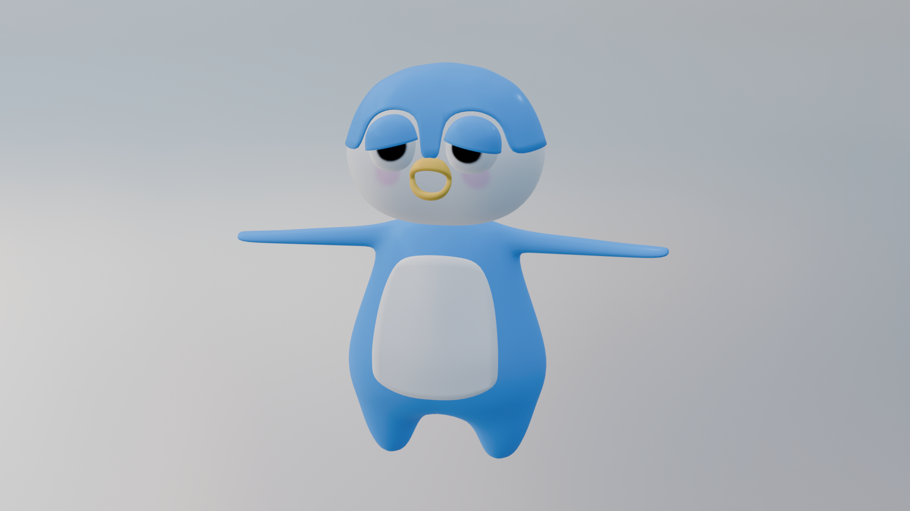
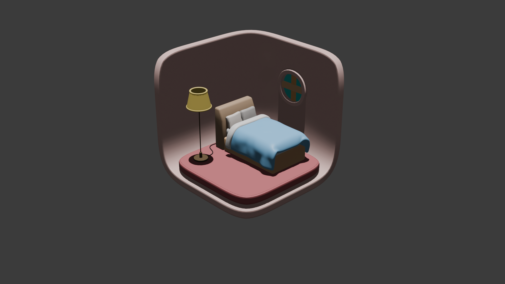

No.1
作品１.ハンバーガー
使用ツール : Blender
2Dのデザインにとどまらず、プロダクトの立体的な構造や質感の表現を学ぶためにはじめに制作した3D作品です。

No.2
作品２.ペンギン
使用ツール : Blender
親しみやすいキャラクター性を意識した3Dマスコットです。

No.3
作品３.ミニマルベッドルーム
使用ツール : Blender
くすみピンクを基調とした落ち着いたカラーリングを意識した空間を演出しました。

No.4
作品４.リキッド・アニメーション
使用ツール : Blender
牛乳パックの中にグラデーションの液体を閉じ込めた3Dモーション作品です。
Contact
メールアドレス → ayaka.mochizuki0629@gmail.com